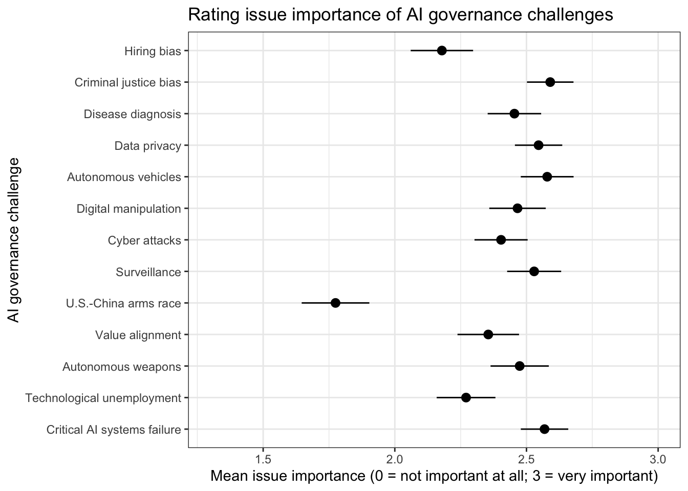
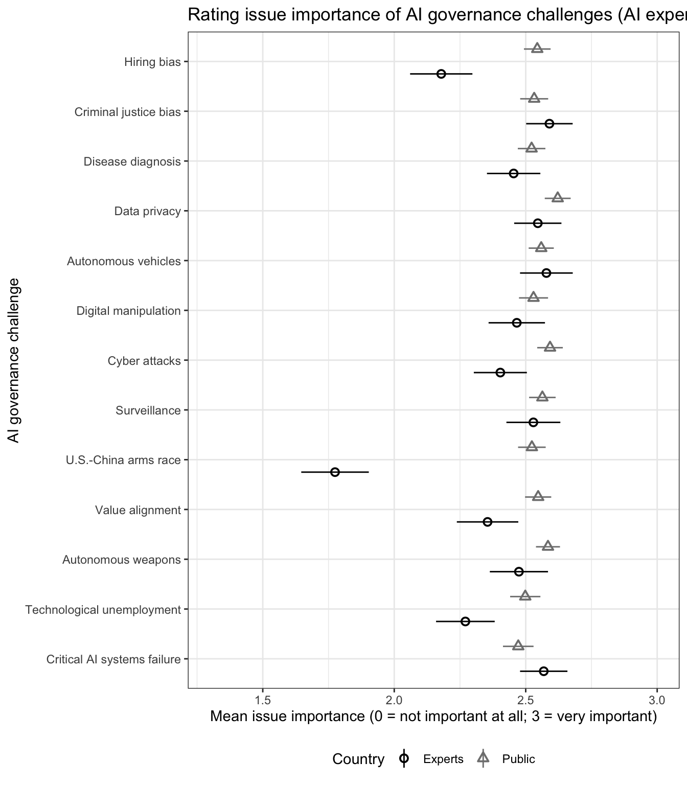
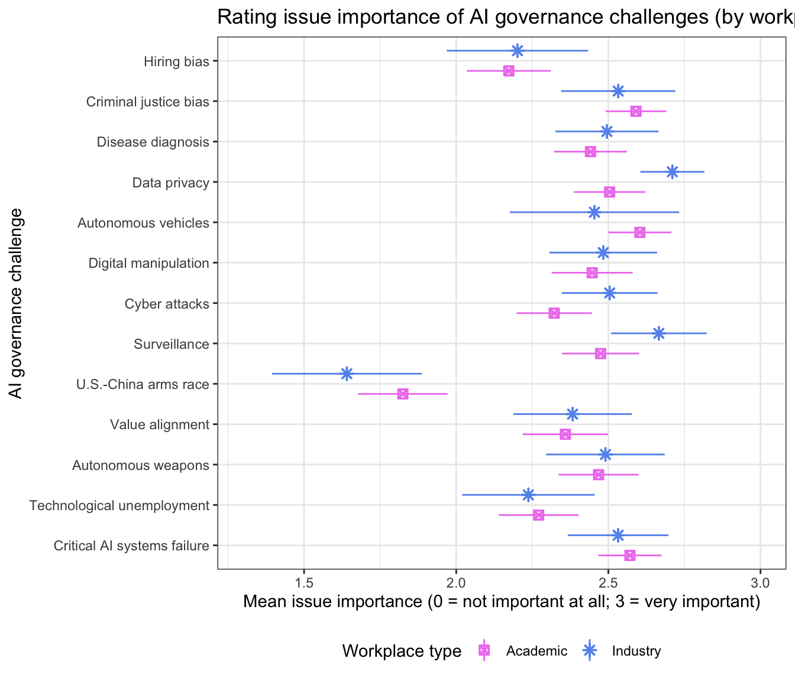

2 AI governance challenges
2.1 Survey question
In the next 10 years, how important is it for tech companies and governments to carefully manage the following issues?
[Respondents will be shown 5 randomly-selected items.]
- Ensure fairness and transparency in AI used in hiring
- Ensure fairness and transparency in AI used in criminal justice
- Make AI used for medical diagnosis accurate and transparent
- Protect data privacy
- Ensure that autonomous vehicles are safe
- Prevent AI from being used to spread fake and harmful content online
- Prevent AI cyber attacks against governments, companies, organizations, and individuals
- Prevent AI-assisted surveillance from violating privacy and civil liberties
- Reducing risks from U.S.-China competition over AI
- Make sure AI systems are safe, trustworthy, and aligned with human values
- Develop treaties to prevent the misuse of lethal autonomous weapons
- Guarantee a good standard of living for those who lose their jobs to automation
- Prevent critical AI systems failures, such as a multi-day regional power outage or a trillion dollar market crash from automated algorithms
Answer choices: Slider that you can choose in between whole numbers (to 1 decimal point), marked - 3 = Very important - 2 = Somewhat important - 1 = Not too important - 0 = Not at all important - I don’t know
2.2 Overall results
| Actor | Mean | SE | N | Subset |
|---|---|---|---|---|
| Hiring bias | 2.18 | 0.06 | 170 | All |
| Criminal justice bias | 2.59 | 0.05 | 167 | All |
| Disease diagnosis | 2.45 | 0.05 | 147 | All |
| Data privacy | 2.55 | 0.05 | 177 | All |
| Autonomous vehicles | 2.58 | 0.05 | 165 | All |
| Digital manipulation | 2.47 | 0.05 | 157 | All |
| Cyber attacks | 2.40 | 0.05 | 176 | All |
| Surveillance | 2.53 | 0.05 | 172 | All |
| U.S.-China arms race | 1.77 | 0.07 | 159 | All |
| Value alignment | 2.35 | 0.06 | 156 | All |
| Autonomous weapons | 2.47 | 0.06 | 157 | All |
| Technological unemployment | 2.27 | 0.06 | 168 | All |
| Critical AI systems failure | 2.57 | 0.05 | 179 | All |
2.3 Compare with the public opinion results
| AI governance challenge | Mean | SE | N | Respondent type |
|---|---|---|---|---|
| Hiring bias | 2.18 | 0.06 | 170 | Experts |
| Criminal justice bias | 2.59 | 0.05 | 167 | Experts |
| Disease diagnosis | 2.45 | 0.05 | 147 | Experts |
| Data privacy | 2.55 | 0.05 | 177 | Experts |
| Autonomous vehicles | 2.58 | 0.05 | 165 | Experts |
| Digital manipulation | 2.47 | 0.05 | 157 | Experts |
| Cyber attacks | 2.40 | 0.05 | 176 | Experts |
| Surveillance | 2.53 | 0.05 | 172 | Experts |
| U.S.-China arms race | 1.77 | 0.07 | 159 | Experts |
| Value alignment | 2.35 | 0.06 | 156 | Experts |
| Autonomous weapons | 2.47 | 0.06 | 157 | Experts |
| Technological unemployment | 2.27 | 0.06 | 168 | Experts |
| Critical AI systems failure | 2.57 | 0.05 | 179 | Experts |
| Hiring bias | 2.54 | 0.03 | 760 | Public |
| Criminal justice bias | 2.53 | 0.03 | 778 | Public |
| Disease diagnosis | 2.52 | 0.03 | 767 | Public |
| Data privacy | 2.62 | 0.03 | 807 | Public |
| Autonomous vehicles | 2.56 | 0.02 | 796 | Public |
| Digital manipulation | 2.53 | 0.03 | 741 | Public |
| Cyber attacks | 2.59 | 0.02 | 745 | Public |
| Surveillance | 2.56 | 0.03 | 784 | Public |
| U.S.-China arms race | 2.52 | 0.03 | 766 | Public |
| Value alignment | 2.55 | 0.03 | 783 | Public |
| Autonomous weapons | 2.58 | 0.02 | 757 | Public |
| Technological unemployment | 2.50 | 0.03 | 738 | Public |
| Critical AI systems failure | 2.47 | 0.03 | 778 | Public |
| Ranking | Experts | Public |
|---|---|---|
| 1 | Criminal justice bias | Data privacy |
| 2 | Autonomous vehicles | Cyber attacks |
| 3 | Critical AI systems failure | Autonomous weapons |
| 4 | Data privacy | Surveillance |
| 5 | Surveillance | Autonomous vehicles |
2.4 Results by country

| Actor | Mean | SE | N | Subset |
|---|---|---|---|---|
| Hiring bias | 2.25 | 0.12 | 36 | US |
| Criminal justice bias | 2.69 | 0.08 | 47 | US |
| Disease diagnosis | 2.33 | 0.12 | 34 | US |
| Data privacy | 2.57 | 0.10 | 42 | US |
| Autonomous vehicles | 2.62 | 0.11 | 35 | US |
| Digital manipulation | 2.48 | 0.11 | 37 | US |
| Cyber attacks | 2.34 | 0.11 | 38 | US |
| Surveillance | 2.50 | 0.12 | 30 | US |
| U.S.-China arms race | 1.90 | 0.12 | 39 | US |
| Value alignment | 2.19 | 0.13 | 31 | US |
| Autonomous weapons | 2.41 | 0.12 | 38 | US |
| Technological unemployment | 2.12 | 0.14 | 35 | US |
| Critical AI systems failure | 2.57 | 0.09 | 43 | US |
| Hiring bias | 2.34 | 0.13 | 23 | China |
| Criminal justice bias | 2.39 | 0.12 | 24 | China |
| Disease diagnosis | 2.54 | 0.11 | 26 | China |
| Data privacy | 2.50 | 0.16 | 24 | China |
| Autonomous vehicles | 2.69 | 0.09 | 31 | China |
| Digital manipulation | 2.42 | 0.16 | 20 | China |
| Cyber attacks | 2.17 | 0.15 | 23 | China |
| Surveillance | 2.10 | 0.17 | 27 | China |
| U.S.-China arms race | 2.26 | 0.18 | 17 | China |
| Value alignment | 2.53 | 0.12 | 23 | China |
| Autonomous weapons | 2.57 | 0.12 | 25 | China |
| Technological unemployment | 2.16 | 0.13 | 25 | China |
| Critical AI systems failure | 2.58 | 0.16 | 22 | China |
| Actor | Mean | SE | N | Subset |
|---|---|---|---|---|
| Hiring bias | 2.01 | 0.15 | 43 | Europe |
| Criminal justice bias | 2.61 | 0.10 | 43 | Europe |
| Disease diagnosis | 2.25 | 0.13 | 30 | Europe |
| Data privacy | 2.39 | 0.11 | 41 | Europe |
| Autonomous vehicles | 2.39 | 0.12 | 37 | Europe |
| Digital manipulation | 2.32 | 0.12 | 41 | Europe |
| Cyber attacks | 2.28 | 0.12 | 41 | Europe |
| Surveillance | 2.81 | 0.06 | 42 | Europe |
| U.S.-China arms race | 1.59 | 0.12 | 42 | Europe |
| Value alignment | 2.23 | 0.15 | 42 | Europe |
| Autonomous weapons | 2.62 | 0.10 | 32 | Europe |
| Technological unemployment | 2.26 | 0.11 | 35 | Europe |
| Critical AI systems failure | 2.50 | 0.09 | 41 | Europe |
| Hiring bias | 2.27 | 0.11 | 40 | North America |
| Criminal justice bias | 2.70 | 0.08 | 52 | North America |
| Disease diagnosis | 2.32 | 0.11 | 40 | North America |
| Data privacy | 2.57 | 0.09 | 47 | North America |
| Autonomous vehicles | 2.61 | 0.10 | 38 | North America |
| Digital manipulation | 2.48 | 0.10 | 40 | North America |
| Cyber attacks | 2.35 | 0.11 | 45 | North America |
| Surveillance | 2.52 | 0.12 | 31 | North America |
| U.S.-China arms race | 1.86 | 0.12 | 44 | North America |
| Value alignment | 2.18 | 0.12 | 36 | North America |
| Autonomous weapons | 2.45 | 0.12 | 41 | North America |
| Technological unemployment | 2.13 | 0.14 | 40 | North America |
| Critical AI systems failure | 2.55 | 0.09 | 46 | North America |
| Hiring bias | 2.28 | 0.09 | 55 | Asia |
| Criminal justice bias | 2.51 | 0.08 | 44 | Asia |
| Disease diagnosis | 2.66 | 0.07 | 49 | Asia |
| Data privacy | 2.52 | 0.09 | 53 | Asia |
| Autonomous vehicles | 2.67 | 0.07 | 67 | Asia |
| Digital manipulation | 2.54 | 0.09 | 56 | Asia |
| Cyber attacks | 2.43 | 0.09 | 60 | Asia |
| Surveillance | 2.39 | 0.09 | 63 | Asia |
| U.S.-China arms race | 1.84 | 0.13 | 47 | Asia |
| Value alignment | 2.51 | 0.08 | 55 | Asia |
| Autonomous weapons | 2.40 | 0.10 | 57 | Asia |
| Technological unemployment | 2.32 | 0.09 | 68 | Asia |
| Critical AI systems failure | 2.65 | 0.08 | 56 | Asia |
2.5 Results by workplace type
| Actor | Mean | SE | N | Subset |
|---|---|---|---|---|
| Hiring bias | 2.17 | 0.07 | 131 | Academic |
| Criminal justice bias | 2.59 | 0.05 | 124 | Academic |
| Disease diagnosis | 2.44 | 0.06 | 113 | Academic |
| Data privacy | 2.50 | 0.06 | 125 | Academic |
| Autonomous vehicles | 2.60 | 0.05 | 131 | Academic |
| Digital manipulation | 2.45 | 0.07 | 113 | Academic |
| Cyber attacks | 2.32 | 0.06 | 132 | Academic |
| Surveillance | 2.47 | 0.06 | 127 | Academic |
| U.S.-China arms race | 1.82 | 0.07 | 123 | Academic |
| Value alignment | 2.36 | 0.07 | 111 | Academic |
| Autonomous weapons | 2.47 | 0.07 | 117 | Academic |
| Technological unemployment | 2.27 | 0.07 | 128 | Academic |
| Critical AI systems failure | 2.57 | 0.05 | 135 | Academic |
| Hiring bias | 2.20 | 0.12 | 42 | Industry |
| Criminal justice bias | 2.53 | 0.10 | 43 | Industry |
| Disease diagnosis | 2.50 | 0.09 | 42 | Industry |
| Data privacy | 2.71 | 0.05 | 53 | Industry |
| Autonomous vehicles | 2.45 | 0.14 | 35 | Industry |
| Digital manipulation | 2.48 | 0.09 | 46 | Industry |
| Cyber attacks | 2.50 | 0.08 | 48 | Industry |
| Surveillance | 2.67 | 0.08 | 52 | Industry |
| U.S.-China arms race | 1.64 | 0.13 | 40 | Industry |
| Value alignment | 2.38 | 0.10 | 51 | Industry |
| Autonomous weapons | 2.49 | 0.10 | 42 | Industry |
| Technological unemployment | 2.24 | 0.11 | 45 | Industry |
| Critical AI systems failure | 2.53 | 0.08 | 51 | Industry |
2.6 F-test to test whether the governance challenges produced different responses
| outcome | |
| (Intercept) | 0.411*** |
| (0.067) | |
| Criminal justice bias | 0.275*** |
| (0.078) | |
| Disease diagnosis | 0.367*** |
| (0.073) | |
| Data privacy | 0.400*** |
| (0.077) | |
| Autonomous vehicles | 0.287*** |
| (0.076) | |
| Digital manipulation | 0.225** |
| (0.076) | |
| Cyber attacks | 0.350*** |
| (0.077) | |
| Surveillance | -0.404*** |
| (0.088) | |
| U.S.-China arms race | 0.176* |
| (0.080) | |
| Value alignment | 0.295*** |
| (0.080) | |
| Autonomous weapons | 0.092 |
| (0.080) | |
| Technological unemployment | 0.390*** |
| (0.073) | |
| Critical AI systems failure | 2.179*** |
| (0.060) | |
| N | 2,150 |
| R2 | 0.088 |
| Adjusted R2 | 0.083 |
| Residual Std. Error | 0.691 (df = 2137) |
| F Statistic | 17.203*** (df = 12; 2137) |
| p < .05; p < .01; p < .001 | |
| Regressing perceived issue importance on all AI governance challenges |